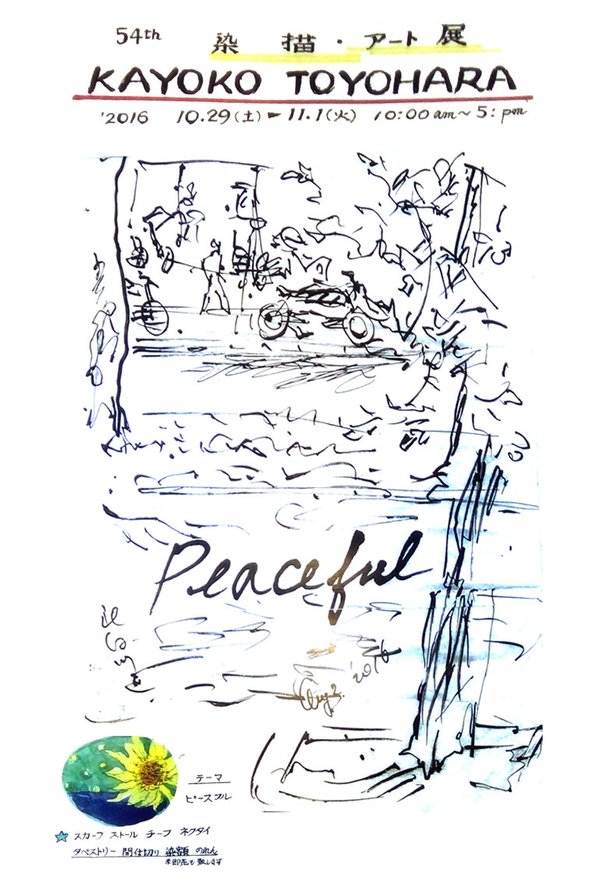

こちらの展示は終了いたしました。
ご来場ありがとうございました。

日時
2016.10/29（土）～11/1（火）／10:00～17:00
アーティスト
彼女の繊細で深い感性が、宇宙空間を表現する独自のデザインを生み出し、京の時に映える新しい色彩を創造している。
淡い何気ないお洒落なデザインは、ニューヨーカーをも魅了したスカーフに染め上げられている。
アーティストとして、室内インテリア分野でも、ユニークな染織の世界を展開している。
- 豊原香代子
- 北京生れ、7歳より京都に在住。成安女子短大意匠科を卒業し、大同マルタ染工意匠室に勤務後は、独自で創作活動を続け京都を中核点とした個展で大作・ファッション作品を継続して発表している。